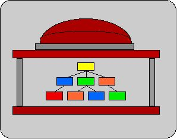

|
 |
View Master Department Hierarchy |
The Master Department Hierarchy is a new system for tracking and
integrating HR org units, Financial Funds Centers and Profit Centers,
Student Systems organizations, and other "department-like objects" in
various systems at MIT. The system allows for more than one tree of DLCs,
offering different views for different purposes.
You can view the "work in progress" on MIT's Master Department Hierarchy
by picking one of the views ("A" is recommended) and clicking the
button "Run report". If you choose the "detailed" formatting option,
you will get a 2-part display:
- A hierarchical representation of DLCs
- A table showing details on each DLC, including long-name, short-name,
and a list of links to other "department-like objects" in HR,
financial systems, and Student Systems.
From the detailed display, click on one of the alphanumeric department codes (e.g., D_AUDIT), and
you will be taken to the detail for that DLC in the table in the 2nd part
of the display.
If you choose the "simple table" option, you will be able to export the results
to an Excel spreadsheet.